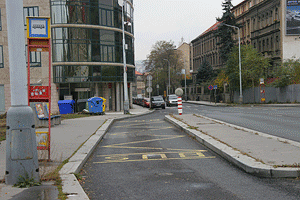

<?php
	$tabulka = true;

	require ('_include/php/zaklad.php');

	titulek ('Beuronské umìní - opatství sv. Gabriela');

	menu ('Vrátit se na úvodní mapu','mapa.html');

	zahlavi ();
?>



<p style="text-align:center">
  Nastoupili jste do autobusu a odjeli...
</p>

<?php
  zapati ();
?>
